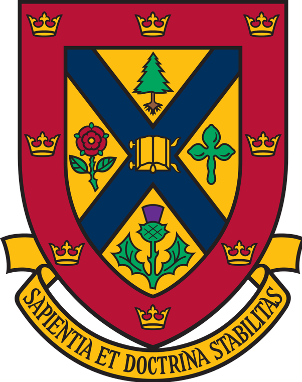

Academic History | |
|---|---|
|
University of Tennessee, Knoxville Summer 2018 -- February 2020 Post-Doctoral Research Associate Supervisor: Michela Taufer |
|

|
University of Delaware Spring 2018 Postdoctoral Researcher Supervisor: Michela Taufer |
|  |
Queen's University Fall 2015 -- Fall 2017 Coleman Postdoctoral Fellow; Adjunct Assistant Professor Research Mentors: Claude Tardif and David Wehlau |
|
University of South Carolina Graduated August 2015 Ph.D. in Mathematics Advisor: Joshua Cooper Dissertation: Toward the Combinatorial Limit Theory of Free Words |
|
|
Seattle Pacific University Graduated June 2010, Summa Cum Laude B.S. in Mathematics Advisor: Robbin O'Leary Capstone project: Collatz Generalized B.A. in Linguistics with Spanish Emphasis Advisor: Kathryn Bartholomew Capstone project: Arabic Influence on the Spanish Language |
|
|
Highline High School Graduated June 2006, Co-Valedictorian |
|